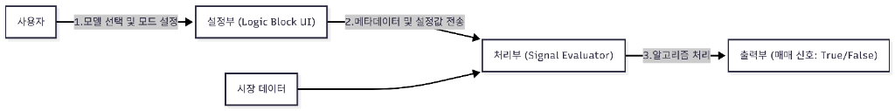
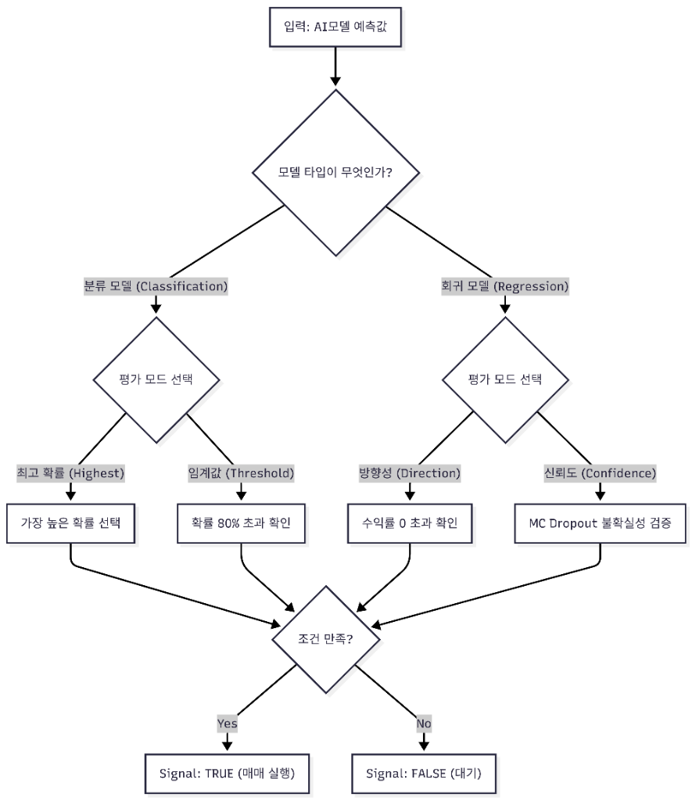

문서 용도: 변리사님 전달용 (발명의 구조 및 동작 원리 설명)
핵심 주제: AI 모델을 일반 투자 전략의 '부품(블록)'처럼 사용할 수 있게 하는 신호 평가 인터페이스
작성일: 2026. 01. 29.
기존의 퀀트 투자 툴은 'RSI가 30 이하일 때'와 같은 단순한 수식 조건만 설정할 수 있었습니다. 사용자가 직접 학습시킨 AI 모델을 사용하려면 복잡한 코딩이 필수적이었습니다.
본 발명은 AI 모델의 복잡한 출력값(확률, 예측 수치 등)을 '매수/매도'라는 단순한 신호로 자동 변환해주는 평가 엔진을 제공하여, AI를 레고 블록처럼 쉽게 조립할 수 있게 하는 시스템입니다.
이 시스템은 크게 설정부(User Input), 처리부(Engine), 출력부(Result)로 나뉩니다.

사용자 말씀대로 AI 모델의 종류(분류 vs 회귀)에 따라 내부적으로 완전히 다른 평가 로직이 작동합니다. 시스템은 이를 자동으로 감지하여 적절한 알고리즘을 적용합니다.
("위/아래"를 맞추는 모델)
이 모델은 AI가 [상승확률, 하락확률]을 출력하므로, 이를 해석하는 전용 로직이 필요합니다.
argmax(확률벡터)max(확률) >= 사용자설정값(예: 80%)
("얼마나 오를지" 가격을 예측하는 모델)
이 모델은 AI가 [예측가격] 또는 [예측수익률]이라는 하나의 숫자를 출력하므로, 다른 해석 방법이 필요합니다.
sign(예측수익률) == 사용자설정방향
LowerBound > 0 (상승 시)평가 엔진은 모델의 타입(Type)을 먼저 체크한 후, 알맞은 경로로 분기(Branching)합니다.

Confidence 모드는 단순 예측값이 아니라,
AI의 "자신감(신뢰도)"을 매매의 안전장치(Safety Lock)로 활용.
변리사님 참고용: 실제 시스템 내부에서 주고받는 데이터의 예시입니다.
[AI 로직 블록 설정값 예시]
{
"type": "ai_signal",
"modelId": "lstm_price_predictor",
"taskType": "regression", // 모델 타입 명시
"evaluationMode": "confidence", // 회귀 전용 모드 사용
"parameters": {
"direction": "positive",
"mcDropoutSamples": 30,
"useUncertainty": true
}
}